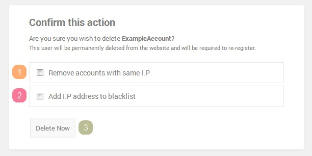

1) Users
Users are probably required in order to run a successful chat website. As without them, well, there's not much chatting! You can disable the ability for users to register
from the administration panel, and create users manually. This is a great way to have a completely private chat room for your friends or co-workers. To disable registration,
click here.
2) Ranks
readyChat has 3 ranks. These include User, Moderator and Administrator. We'll explain what each rank can do on your chat room below.
Users
"Users" is the primary rank awarded to new registrants. They can use the chat functions on the front-end, but cannot moderate or manage the chat rooms. They also cannot be exempt from
the spam filters or the idle timers, though these features can be disabled entirely.
Moderators
Moderators have the ability to moderate the chat rooms and ensure users are following the rules. They have the ability to use commands such as "/prune" and "/kick" to moderate
the chat. Moderators can be exempt from the spam timer and idle kicker if the site administrator has selected these options in the
chat settings
but are restricted from spamming/idling by default. Moderators cannot enforce their powers on administrators.
Administrators are in charge of the chat rooms and can overpower moderators when kicking/banning users. By default, chat room administrators are not granted access to the
administrator control panel. Any user in your chat can have access to the control panel if you set it for their account, this is not restricted to chat
administrators.
3) Deleting Users

The above image will help you understand what we're refering to in the following section.
1 - Remove accounts with the same I.P
By selecting "Remove accounts with the same I.P" this will delete any other accounts the user has made whilst using the same I.P address. If the user was foolish and created multiple
accounts with the same I.P address, you can quickly crack down on this by selecting this option.
2 - Add I.P address to blacklist
Adding the IP address to your blacklist will ensure that the user cannot login or create any new accounts whilst using that I.P address. The blacklist is stored in your database
and is checked when a user attempts to access your login/registration pages.
3 - Delete Now
It's a self explanatory button, though we thought it'd be best to say that upon clicking this button, the tasks selected will be instantly attempted. There is no secondary
confirmation page to the deletion process. It is not possible to delete your main admin account (created when installing readyChat) for security reasons.
4) Banning Users
If the user is presently online, banning can be completed via command in-chat (/ban username). If however the user is offline, proceed to the
user management
section of your administration panel, find the user's account information and tick "Ban User". If the user is online when you do this, they will be presented with a "Banned" message and will
be disconnected.
5) Blacklisting IPs
Blacklisting IP addresses allows you to deal with trouble makers more easily and for a longer period of time. It's not possible to use this method if the trouble maker
regularly swapping IP addresses, though for those who aren't familiar with VPNS, proxies and a multitude of other options, this option should do you just fine.
You can blacklist IP addresses by banning a user and selecting "Add I.P address to blacklist" or by visiting the
blacklist page
on the administration panel. From here you can view all blacklisted IPs, add new IPs and remove them too.